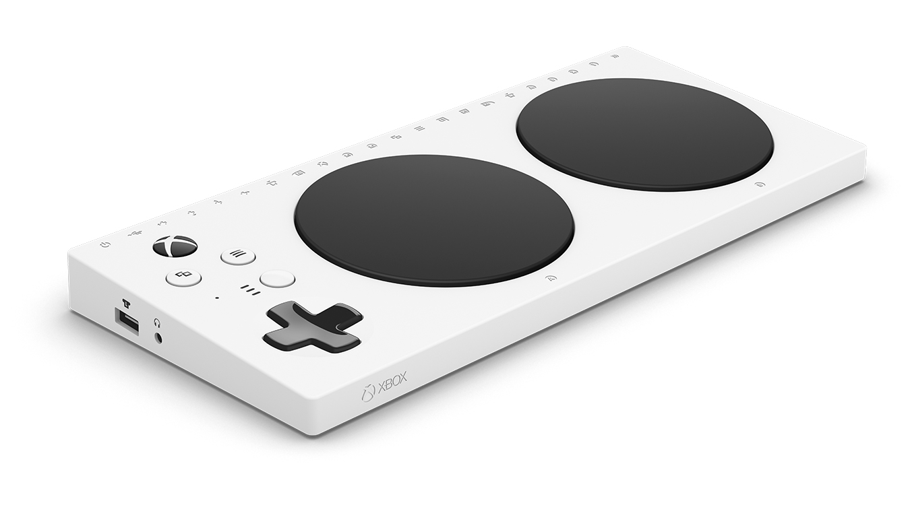

Beneficios que otorga Xbox Adaptative Controller
- Juega a tu manera
- Diseñado principalmente para satisfacer las necesidades de los jugadores con movilidad limitada
- Complementa la experiencia
- Conecta dispositivos externos, como interruptores, botones, montajes y joysticks, para crear un mando personalizado, exclusivo para ti.
- Interfaz sencilla y fácil de usar
- Los usuarios pueden ajustar los controles sin necesidad de configuraciones complejas, lo cual es especialmente útil para personas que prefieren una experiencia de usuario simple.
Elementos a los que sustituye y su evolución

El Xbox Adaptative Controller sustituye a el mando básico.
Antes del XAC, jugadores con discapacidades solían depender de controles modificados manualmente, muchas veces realizados de forma casera o a través de terceros. Estos eran a menudo costosos, poco accesibles y no siempre confiables.
El Xbox Adaptive Controller ha pasado de ser un producto de nicho a ser un referente en accesibilidad en videojuegos.Ha revolucionado cómo se piensa en el diseño de controles, eliminando barreras y promoviendo la accesibilidad como un componente esencial en los videojuegos. Su éxito ha incentivado a otros fabricantes y desarrolladores a seguir el ejemplo y a explorar nuevas formas de hacer que el mundo de los videojuegos sea inclusivo para todos.
Información adicional sobre los Xbox COntroller Adaptative
Si deseas conocer más acerca del Xbox Controller Adaptative clica aqui para acceder a dicha información